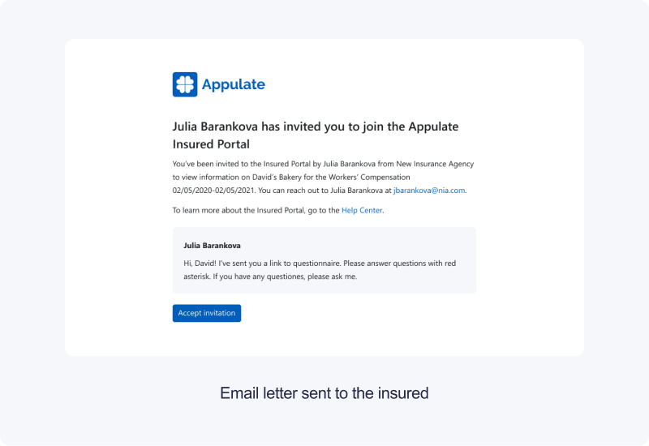

Sharing UX
Aug-Oct 2020
Communication between the insurance agent and the client is a key moment. From the business perspective, it’s important to ensure an end-to-end insurance process. We redesigned sharing process, the number of invites increased by 7% and we found new growth points.
User research ✷ Information architecture ✷ UI/UX design
➀ Context
There is a special portal with quotes info for insureds in the product. After agents are ready to share info with the insured they can send invites to clients to this portal. From the sales team and analytics data, we knew that a lot of agents didn't know about this feature or don't invite their clients for some reason.
➁ Research
First, I needed to understand what problems users face when inviting clients on the portal and when agents need to share data with insureds. To define it I used the following data:
– Interview with stakeholders and sales team
– Google analytics data
To easily navigate problem points, I made a schema of how the sharing process works now.
➂ Problems
The following problems had been defined:
- 1. Agents needed to leave a quote page to send an invite. This knocked the user out of the context of work on the quote.
- 2. The agents didn’t know what the insured will see on the portal.
- 3. The old way gave the insured access to the entire portal with different insurances from different agents.
To easily navigate between defined problems and possible solutions I made a simple matrix.

Our main hypothesis was that if we place a Share button on the submission level and build it to agents workflow so users wouldn't have to go to other pages to send invites, the number of sent invitations will increase by 15%.
➃ Defining workflow
I created a workflow schema to consider all of the required data for the sharing and to keep in mind all of the extreme points of this flow.
➄ Solution
Keeping in mind that it was difficult for users to find the invite button and the fact that the agent needs to provide a link to data on a specific quote, we put the button "Share with insured" on the submission level.

We knew that agents didn't know what kind of the data insured will see on the portal. It was important for us to make the process of sharing information as transparent as possible so that agents can see what data they are transferring to the insured. We added a tip and a link to the preview mode of the portal.
➅ Outcomes
We specially made a simple and fast solution to quickly check it on real data. As a result, we saw that number of invites increased by 7%. We expected more growth, so we began to study the reasons.
We found out that the growth was due to the fact that some users learned about the portal, as the invite process became more obvious. But we also defined that the portal has limited functionality, and a lot of agents see no reason to invite insureds to it. As a result, we have found a growth point and can start deeper research.